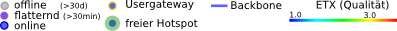

<!DOCTYPE html>
<!--
A map visualizing the OpenNet infrastructure on OpenStreetMap.
by Matthias Meißer, released under GPL
-->
<html>
<head>
	<meta http-equiv="content-type" content="text/html; charset=ISO-8859-1">
	<title>Opennet Karte</title>
	<script type="text/javascript" src="oniMaps.js"></script>
	<script type="text/javascript" src="OpenLayers-2.12/OpenLayers_dev.js"></script><!---DEV version for hint support--->
	<script type="text/javascript" src="OpenStreetMap.js"></script>
	<script type="text/javascript" src="cloudmade.js"></script>
	

  <style>.pop_heading{font-family: Arial, Helvetica, sans-serif; font-weight: bold;font-size:16px}</style>
  <style>.pop_text{font-family: Arial, Helvetica, sans-serif;
	font-size: 12px;
	text-decoration: none;
	padding-right:5px;
	padding-top:5px;}
	
	</style>
  <script>
	var BASE_URL="http://www.opennet-initiative.de/api"
//	var BASE_URL="http://localhost:8080/api" //for local testing environment
	var proj4326
	var projmerc
	var map
	var aps_online, aps_offline, links, links_descr
	var popup,lengthPopup;
	var feature
	var showLabels=false;
	var panel
	//Init
	function init(){
		proj4326 = new OpenLayers.Projection("EPSG:4326");
		projmerc = new OpenLayers.Projection("EPSG:900913");       
		map=initMap(true);
		addBaseLayers();
		layers=addOverlays();
		aps_offline=layers.aps_offline;
		aps_online=layers.aps_online;
		links=layers.links;
		addHeadQuarter();
		initInteraction();
		//the measurement bar
		panel=createMeasurePanel();
		map.addControl(panel);
		centerMap();
	}
	
	function addHeadQuarter()
	{
		var hqStyle = OpenLayers.Util.extend({}, OpenLayers.Feature.Vector.style['default']);
		hqStyle.fillOpacity = 0.2;
		hqStyle.graphicOpacity = 1;
		hqStyle.externalGraphic = "oni-logo.png";
		hqStyle.graphicWidth = 29;
		hqStyle.graphicHeight = 32;
		hqStyle.title ="Vereinsraum in der Frieda23"
		hqLayer=new OpenLayers.Layer.Vector("Vereinsraum", {displayInLayerSwitcher: true,projection: proj4326});
        var hq = new OpenLayers.Feature.Vector((new OpenLayers.Geometry.Point(12.12292,54.09125)).transform(proj4326,projmerc),null,hqStyle);
		hqLayer.addFeatures([hq]);
		map.addLayers([hqLayer]);
	}
	
	function createMeasurePanel()
	{
		//idea by http://heartbeat.basicinside.de/karte
		var p = new OpenLayers.Control.Panel({'displayClass':'olControlEditingToolbar'});
		var m = new OpenLayers.Control.Measure(OpenLayers.Handler.Path, { displayClass: 'olControlDrawFeaturePath', geodesic: true});
		m.events.on({
			"measure": onClickMeasure,
			"measurepartial": onClickMeasure
			});
		p.addControls([ new OpenLayers.Control.Navigation(), m]);
		p.activateControl(p.controls[2]);
		return p;
	}
	
	//display Popup with measure result
	function onClickMeasure(event) {
		if (lengthPopup)
		  lengthPopup.hide();
		var units = event.units;
		var measure = event.measure;
		lengthPopup = new OpenLayers.Popup.FramedCloud("featurePopup",
			event.geometry.getBounds().getCenterLonLat(),
			new OpenLayers.Size(120,100),
			"<b>Laenge</b><br />"+measure.toFixed(3) + units,
			null, true, onLengthPopupClose);
		map.addPopup(lengthPopup);
	}
	
	function onLengthPopupClose() {
		lengthPopup.hide();
	}
	
	
	function toggleLabels(checkbox)
	{
		showLabels = checkbox.checked;
		aps_online.redraw();
		aps_offline.redraw();
		links.redraw();
//		links_descr=
	}
        
</script>
</head>
<body onload="init();" style="background-color: #B5D0D0">
		<div id="map" style="position:absolute; left:0.5%; top:3px; width:99%; height:94%"></div>
		<div id="footer" style="padding-left:1%; width:98%; position:absolute; bottom:2px; font-family:Arial,Helvetica,sans-serif; font-size:12px;">
			
			<input style="margin-left: 20px" type="checkbox" name="checkLabels" onChange="toggleLabels(this)"> Beschriftungen<br/>
		</div>
</body>
</html>
